学习笔记-管综199数学
2025-08-01创建
第一讲
短除法求最小公倍数、最大公因数
母题模型1：带余除法问题
余同加余
一个数除4，5，6都余1，求这个数的最小可能值
$x-1 = (4,5,6)k$
$x= (4,5,6)k +1$
差同减差
一个数除4，5，6分别余3，4，5（差1个整除），求这个数的最小可能值
$x+1 =(4,5,6)k$
$x = (4,5,6)k-1$
和同加和
一个数除4余3，除5余2，除6余1（和相同），求这个数的最小可能值
$$\begin{cases}x-3 = 4k_1 \\x-2 = 5k_2 \\ x-1 = 6k_3 \end{cases}$$
$$\begin{cases}x-7 = 4k_1-4 \\x-7 = 5k_2-5 \\ x-7 = 6k_3-6 \end{cases},说明(x-7)可以被4，5，6整除$$
$x-7 = (4,5,6)k$
$x = (4,5,6)k+7$
注意
题目中有可能不会直观的体现和同、余同、差同，例如除2余1等价于除2差1等价于除2多1，要会转化
无规律
- 列等式
- 拆大系数项
- 讨论倍数
e.g.除5余3，除8余4
$5k_1+3 = 8k_2+4$
$5(k_1-k_2)=3k_2+1,令k_2取值满足整数要求，这里取k_2=3$
代入求得即可
母题模型2：质数合数问题
质数的倒数和问题
x,y,z为质数，倒数和为$\frac{1661}{1986}$,求xyz的和
$通分发现分母即为xyz，于是将1986用短除法得到3个质因数，即为xyz$
多项式质数问题
x∈Z，$x^2+8x-20$为质数，求这个质数。
$x^2+8x-20\rightarrow （x-2）(x+10)为质数 \rightarrow 其中一个为1，另一个即为质数本身。讨论$
母题模型3：约数倍数问题
公式一则
$x*y = (x,y)*[x,y]$
公式解题
$$\begin{cases} x = ak\\y = bk\\(x,y) = k\\ [x,y]=abk\\(a,b)=1\end{cases}$$
e.g.最大公因数是6，最小公倍数是72，解xy
k=6,abk = 72,ab =12,由于ab互质
讨论ab的多种组合 1x12？3x4？2x6？（排除）
将ak，bk分别带入看哪个满足题设
母题模型4：整数不定方程问题
加法模型
识别
- 正整数
- 不定方程（方程个数不足以求解未知数）
- 加法运算
方法
- 列出方程
- 奇偶分析
- 尾数分析
- 倍数分析

乘法模型
公式
$a^2-b^2 = (a+b)(a-b)$
$abab公式：ab-ma-nb +mn=(a-n)(b-m)$
母题模型5：实数的运算
裂项公式
$(1).\frac{1}{n(n+k)}=\frac{1}{k}*(\frac{1}{n}-\frac{1}{n+k})$
$(2).\frac{n-1}{n!}=\frac{1}{(n-1)!}-\frac{1}{n!}$
$(3).\frac{1}{\sqrt{n+k}+\sqrt{n}}=\frac{1}{k}(\sqrt{n+k}-\sqrt{n})$
$(4).(a+b)(a^2+b^2)(a^4+b^4)+...(a^{2^n}+b^{2^n})=\frac{(a-b)(a+b)(a^2+b^2)(a^4+b^4)+...(a^{2^n}+b^{2^n})}{a-b}$
多括号相乘
$1-\frac{1}{n}型$：
$(1-\frac{1}{2})*(1-\frac{1}{3})*(1-\frac{1}{4})...=\frac{1}{2}*\frac{2}{3}*\frac{3}{4}...$
$1-\frac{1}{n^2}型$：
利用平方差公式，减和减放一起，加和加放一起变成$1-\frac{1}{n}$型

母题模型6：比例运算
比例的性质
$等比公式:\frac{a}{b}=\frac{c}{d}=\frac{e}{f}=\frac{a+b+c}{d+e+f}$
比例统一问题
- 统一公共项
$甲：乙=7：5，乙：丙=3：4，则甲：乙：丙？→21：15：20$
- 统一不变项
$甲：乙=7：5，甲-10后，甲：乙变成了4：3，问人数？→21：15→20：15，一份10人。$
- 统一总量
$甲：乙=7：5，甲中10人去了乙，变成了1：1，问人数？→7：5→6：6，一份10人。$
母题模型7：绝对值的三角不等式
$||a|-|b|| \le |a+b| \le|a|+|b|$
$||a|-|b||\le|a-b|\le|a|+|b|$
注：关于这个绝对值的三角不等式，我总结为：同号不变，异号变号。指的是中间的量与两边比，若是不变号满足，则为同号，否则反之。举例$||a|-|b||\le|a-b|$，减号不变，ab同号。
第二讲
母题模型8：整式运算
常用公式
$(a+b+c)^2=(a^2+b^2+c^2+2ab+2ac+2bc)$
$a^2+b^2+c^2+ab+bc+ac=\frac{1}{2}[(a+b)^2+(a+c)^2+(b+c)^2]$
$(a\pm b)^3=(a\pm b)(a^2\mp ab+b^2),完全立方公式为1331$
母题模型9：因式定理＆余式定理
因式
F(x)=f(x)g(x),F(x)被f(x)整除。$若存在a使得f(a)=0←→则x-a是F(x)的一个因式$
余式
F(x)=f(x)g(x)+r(x),同上a，则F(a)=r(x)

母题模型10：形如$x+\frac{1}{x}=a$的求值
$x+\frac{1}{x}$的递推
已知$x+\frac{1}{x}$：
$x^2+\frac{1}{x^2}=(x+\frac{1}{x})^2-2$
$x^3+\frac{1}{x^3}=(x+\frac{1}{x})^3-3(x+\frac{1}{x})$
$x-\frac{1}{x}=\pm\sqrt{x^2+\frac{1}{x^2}-2}$
$x^2+ax+1=0$的降幂
$$ \begin{cases}x^2=-ax-1\\x^2+ax=-1\\x^2+1=-ax\\x+\frac{1}{x}=-a \end{cases} $$
第三讲
母题模型11：均值不等式
母题识别
已知几个字母的和或积的值，求另一个多项式的最值；类似对勾函数的问题
最基础：一正二定三相等
$ax+\frac{b}{x}\ge 2\sqrt{ab},>0;全项相等时取等$
变式：不止两项或不止二次的均值不等式
$\frac{a}{n}x+\frac{a}{n}x+..._{n项}+\frac{b}{x^n} \ge n\sqrt[n]{\frac{a^nb}{n^n}}$


方法
求和的最小值：均等拆分低次项
求积的最大值：均等拆分高次项
1的代换
$a+2b=1$,求$\frac{1}{a}+\frac{2}{b}$的最值
$(a+2b)*(\frac{1}{a}+\frac{2}{b})=5+\frac{2b}{a}+\frac{2a}{b}\ge5+2\sqrt{4}=9$
证明不等式
两个例题


母题模型12：柯西不等式
$(a^2+b^2)(c^2+d^2)\ge (ac+bd)^2,ad=bc时取等$
$原理：a^2c^2+\underline{b^2c^2+a^2d^2}+b^2d^2\ge a^2c^2+2bcad+b^2d^2=(ac+bd)^2$
$2(x^2+y^2)\ge(x+y)^2 \ge4xy,x=y时取等$
$原理：x^2+y^2+\underline{x^2+y^2}\ge x^2+y^2+2xy=(x+y)^2$


母题模型13：二次函数的基本问题
区间根
基本的思想就是两个根对应图像的两个零点：
两根在不同区间时,例如
$x_1 < 1< x_2 \rightarrow af(1)<0$
$x_1∈(1,2),x_2∈(2,3) \rightarrow \begin{cases} af(1)>0\\af(2)<0\\af(3)>0\end{cases}$
两根在同区间时，还需考虑Δ和对称轴的关系
$x_1,x_2∈(1,2)\rightarrow \begin{cases} Δ \ge 0 \\ -\frac{b}{2a}∈(1,2)\\af(1),af(2)>0\end{cases}$
$1<x_1<x_2 \rightarrow \begin{cases} Δ>0\\ -\frac{b}{2a}>1\\af(1)>0\end{cases}$
第四讲
母题模型14：数列连续等长片段和
在等差或等比数列中，形似 $S_m,S_{2m}-S_m,S_{3m}-S_{2m}$ 的被称为数列连续等长片段和
等差数列
对于等差数列：
$S_m=a_1+a_2+\dots+a_m$
$S_{2m}-S_m=a_{m+1}+a_{m+2}+\dots+a_{2m}$
下减上，得：
$(S_{2m}-S_m) -S_m=md+md+\dots+md=m^2d, 为定值$
同理可推广，故等差数列的连续等长片段和为等差数列，公差为 $m^2d$.
等比数列
对于等差数列：
$S_m=a_1+a_2+\dots+a_m$
$S_{2m}-S_m=a_{m+1}+a_{m+2}+\dots+a_{2m}$
下除上，得：
$(S_{2m}-S_m) \div S_m=\frac{a_{m+1}+a_{m+2}+\dots+a_{2m}}{a_1+a_2+\dots+a_m}=\frac{q^m(a_1+a_2+\dots+a_m)}{a_1+a_2+\dots+a_m}=q^m, 为定值$
同理可推广，故等比数列的连续等长片段和为等比数列，公比为 $q^m$.
母题模型15：递推数列问题
构造特殊数列，例如差后等差数列等。例题：

类等差数列
识别：
$a_{n+1}-a_n = f(n)$，特点是 $a_{n+1}$ 与 $a_n$ 系数相同
方法：
先写几项观察规律（如上例题，即找出 $f(n)$），后用累加法求解。如果是单选题，先代特殊值
类等比数列
识别：
$\frac{a_{n+1}}{a_n} = f(n)$，特点是 $a_{n+1}$ 与 $a_n$ 系数不同，递推式无常数项
方法：
先写几项观察规律（如上例题，即找出 $f(n)$），后用累乘法求解。如果是单选题，先代特殊值
类一次函数数列
识别：
$a_{n+1}=A*a_n+B$，特点是系数不同有常数项
方法：
构造等比数列法：左右加 $t$，令 $a_{n+1}+t=A*a_n+B+t=A(a_n+t)$，写 $a_n+t$ 的通项公式
$S_n$ 与 $a_n$ 的关系型
原理：
$$S_n-S_{n-1}=a_n \\ S_1=a_1$$
第五讲
母题模型16：平面几何的基本问题
中线、角平分线定理
中线
在ΔABC中，AD是BC上的中线，则有:$AB^2+AC^2=2AD^2+2BD^2=2AD^2+2CD^2$

角平分线
在ΔABC中，AD是BC上的角平分线，则有：$\frac{BD}{DC}=\frac{AB}{AC}$

圆有关的定理
垂径定理

切割线定理
$CD^2=AD*BD(用相似三角形证明)$

三角形有关定理
内心
内心即为三角形内切圆的圆心，是三条角平分线的交点。记忆：角平分线到角两边距离相等，内切圆圆心到边的距离相等
 $$
\begin{cases}
S_Δ=\frac{1}{2}(AC+AB+BC)r\\
AE=AF,CE=CD,BD=BF\\
\text{if } RtΔ:\; r=\frac{a+b-c}{2}
\end{cases}
$$
$$
\begin{cases}
S_Δ=\frac{1}{2}(AC+AB+BC)r\\
AE=AF,CE=CD,BD=BF\\
\text{if } RtΔ:\; r=\frac{a+b-c}{2}
\end{cases}
$$
外心
外心即为三角形外接圆的圆心，是垂直平分线的交点。记忆：垂直平分线上的点到两端点的距离相等，三角形的端点在外接圆上。

$S_Δ=\frac{abc}{4R}$
由正弦定理证明：
$\frac{a}{\sin A}=\frac{b}{\sin B}=\frac{c}{\sin C}=2R$
$S=\frac{1}{2}ab\sin C$
特别的，对于直角三角形，外接圆的圆心是斜边上的中点。
重心
重心即为三角形三条中线的交点。记忆：由于重心的物理意义要求平均。

中线2：1，面积1：1定理
重心把每一条中线都分成2：1的两部分，把整个三角形的面积平均分给六个小三角形；在平面直角坐标系中，重心的坐标也是三个端点的平均。
母题模型17：平面几何五大模型
等面积模型
识别：题目中的三角形的底或高存在一定的数量关系。同底三角形，高之比为面积比。
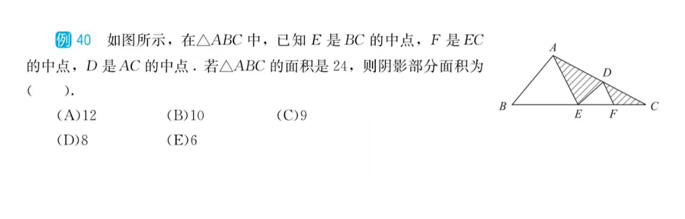共角模型
相似模型
所谓共角，实际上指的是共Sin值的角，所以不只有同角这一种，还需要考虑等角、补角。
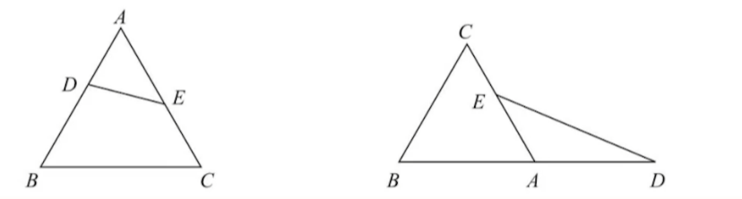 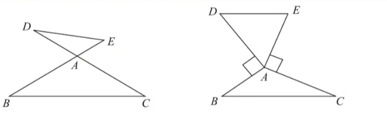基本原理如图1所示，由于$S_{ΔADE}=\frac{1}{2}AD*AE*SinA$,$S_{ΔABC}=\frac{1}{2}AB*AC*SinA$,所以$S_{ΔADE}:S_{ΔADE}=AD*AE:AB*AC$.
燕尾模型
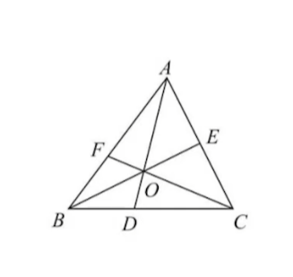证明：$S_{ΔAOB}:S_{ΔAOC}=BD:DC$
$$ \because S_{ΔABD}:S_{ΔADC}=BD:DC\\ S_{ΔBOD}:S_{ΔDOC}=BD:DC\\ ∴\frac{S_{ΔABD}}{S_{ΔADC}}=\frac{S_{ΔBOD}}{S_{ΔDOC}}=\frac{S_{ΔABD}-S_{ΔBOD}}{S_{ΔADC}-S_{ΔDOC}}=\\\frac{S_{ΔAOB}}{S_{ΔAOC}}=\frac{BD}{BC} $$例题一则
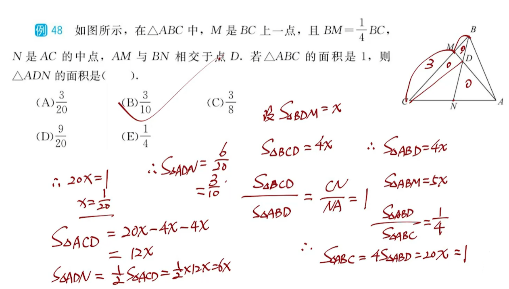风筝/蝴蝶模型
风筝模型
风筝模型实际上也是一个等面积模型：
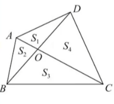从BD方向看，$S_1$和$S_2$共高，又分别与$S_4$,$S_3$共底，可得$\frac{S_1}{S_2}=\frac{S_4}{S_3}=\frac{OD}{OB}$.从AC方向看同理。
蝴蝶模型
蝴蝶模型在梯形中：
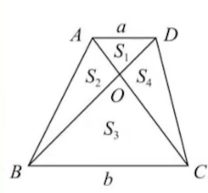蝴蝶模型的等面积比之风筝模型，只多了一个特殊的地方：BC到AD的距离是一个定值。
由风筝模型可得$\frac{S_1}{S_2}=\frac{S_4}{S_3}=\frac{OD}{OB}=\frac{a}{b}(相似)$,然而易证$S_2=S_4$,故$S_1*S_3=S_2^2=S_4^2$.
由这个特性还可推出$S_1:S_3=(a:b)^2$,因为$ \frac{S_1}{S_2}=\frac{S_2}{S_3}=\frac{a}{b}$,二者相乘即得。
母题模型18：解析几何基本问题
点到直线的距离公式
设直线方程为$Ax+By+C=0$,直线外一点$x_0$到直线的距离为：
$$ d_0=\frac{|Ax_0+By_0+C|}{\sqrt{A^2+B^2}} $$第六讲
母题模型19：排队问题
捆绑法解决相邻问题
eg.7个人排队，3男4女，要求女生必须站一起，求排列总数？
把4个女生看成一个整体，和剩下的3个男生排列$A_4^4$,紧接着再在女生内部进行排列$A_4^4$
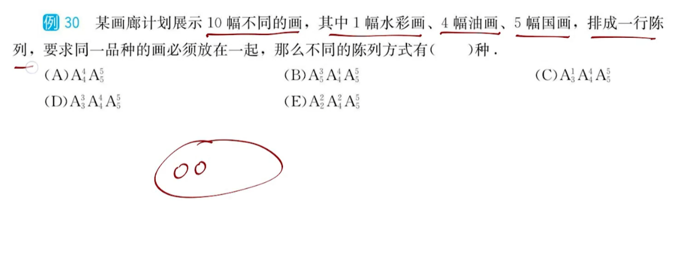插空法解决不相邻问题
eg.7个人排队，3男4女，要求男生必须隔开，求排列总数？
不用隔开的女生之间放上空位（0A0B0C0D0）因为男生不相邻有隔1个、隔2个的情况，考虑起来困难。在5个空位里安插3个男生，再对女生全排列即可。$A_4^4*A_5^3$.
当相邻和不相邻同时出现时，先考虑相邻，再考虑不相邻。
消序解决定序问题
当不同元素排列，整体排列但局部定序时，可以先对整体进行全排列，然后再除以局部的全排列，将局部的排列顺序确定。例如5个元素排列，其中3个顺序只有1种，那么结果是$\frac{A_5^5}{A_3^3}$。
母题模型20：挑选组合问题
万能元素讨论
若分工不明确，只是啥都能干
讨论万能元素是否参与挑选：
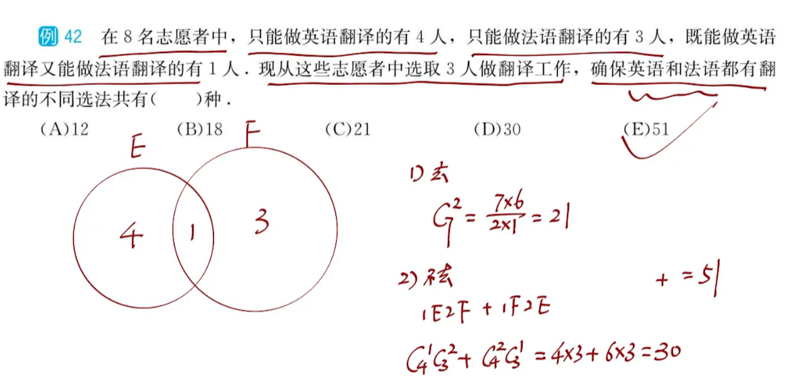若分工明确，则使用单边讨论法
讨论万能元素是去哪一边：
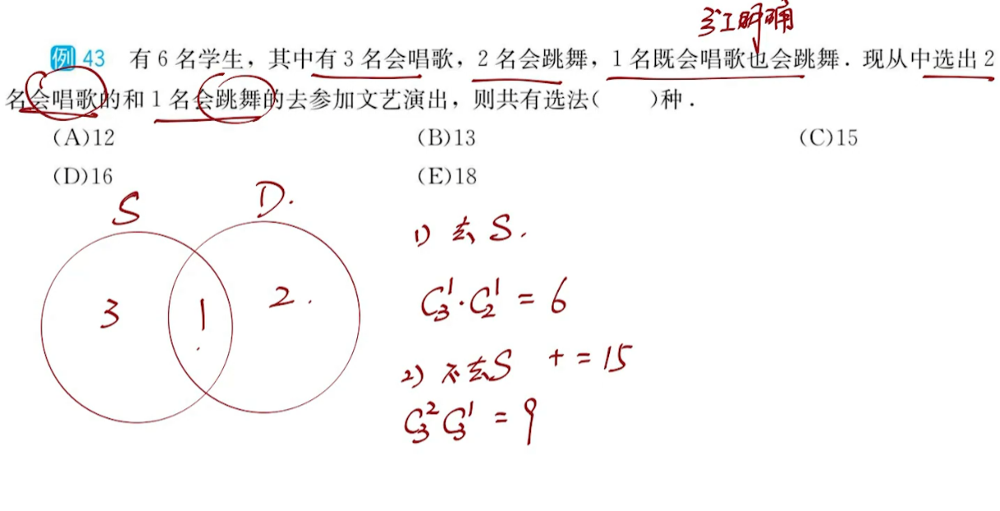 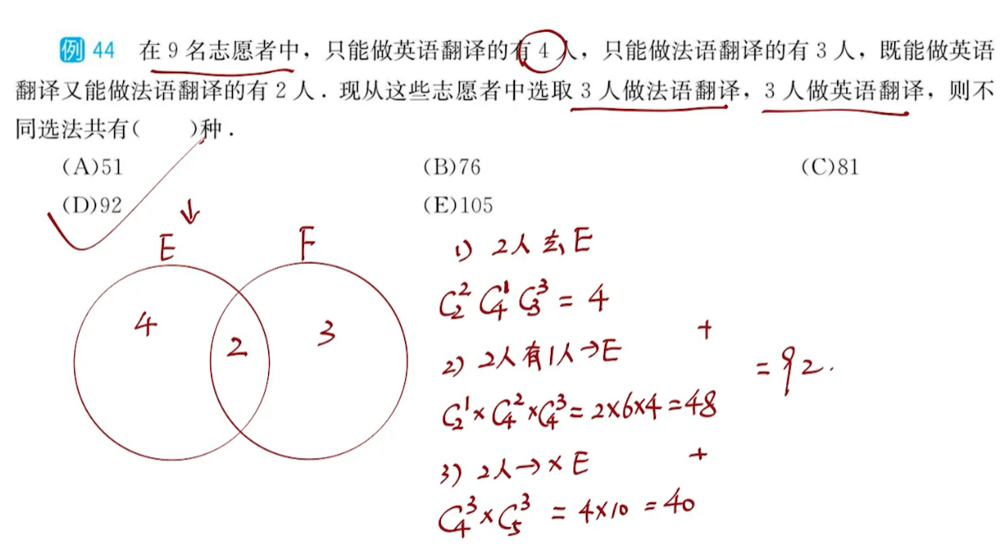分组分配问题
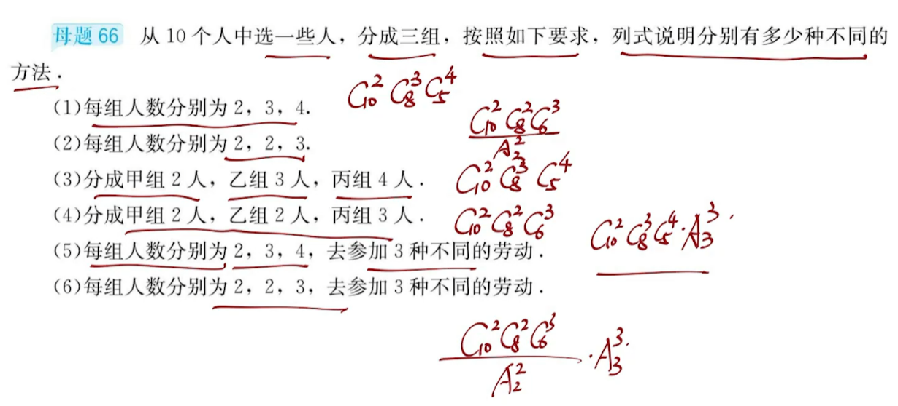在（2），（6）中，两组无名组别人数一样时要消序。
不同元素分配问题：分房问题
4个人住3个房间，房间可以为空，有多少排列方式？
对于4个人中的每一个，都有3个房间可以选择，所以是$3*3*3*3$
在这个问题中，人是不可重复元素，即一个人不能既住房间1，又住房间2。而房间则是可重复元素，即一个房间可以既住A，又住B，甚至可以不住。对于简单的、基础的分房问题，有通解：$可重复元素^{不可重复元素}$,记忆为可下不可上。
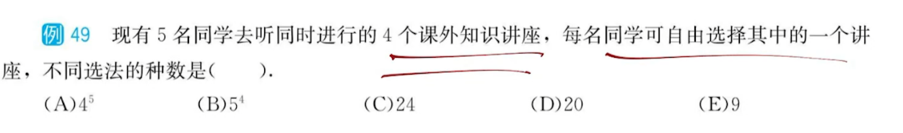相同元素分配问题：分球问题
4个相同的小球，放进3个不同的盒子ABC里，每个盒子至少有一个，有多少排列方式？
这个问题可以等价于用隔板把相同的小球分为3部分：O|O|OO，也可以想象成用剪刀把绳子剪成几段。
一般而言$n$个相同的小球，有$n-1$个缝隙可以放隔板；而$m$个不同的盒子，则需要放$m-1$个隔板，才能把小球分成$m$份（一刀两断）。故问题转化为了在$n-1$个缝隙中挑$m-1$个位置放隔板的问题——$C_{n-1}^{m-1}$。
注意使用隔板法必须满足以下条件：
- n个元素必须完全分完；
- n个元素必须完全相同；
- 每个盒子中至少要有一个。

但是天有不测风云：假如条件3不满足，应该怎么办呢？
4个相同的小球，放进3个不同的盒子ABC里，每个盒子至少有一个，有多少排列方式？
使用增加元素法：‘增加’3个小球先放进盒子里，就满足每个盒子至少有一个了。此时再对7个小球、3个盒子进行隔板法即可。在用这种方法分配完之后，在每个盒子中拿掉一个，就是实际上可以为空的分配方法了。推广地，对于n球m盒可为空，则加上m个球，再计算$C_{n+m-1}^{m-1}$即可。
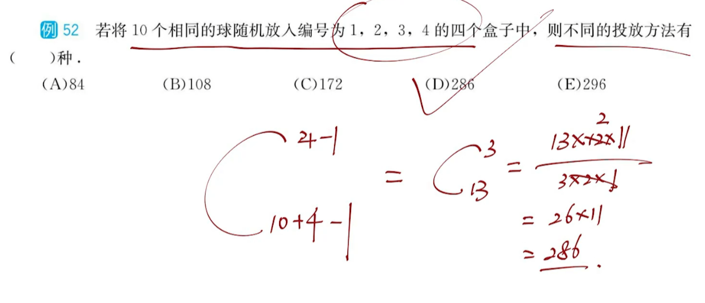但是有不满足，就有过满足：假如有一些盒子里至少要放两个、三个，怎么办呢？
10个相同的小球，放进3个不同的盒子ABC里，每个盒子至少有一个，C盒中至少放3个，有多少排列方式？
这个更简单：直接在分配之前从总球数里给你几个，使你至少放1个即可满足要求即可。对所有有特殊要求的对象都进行初次分配，譬如这里的C盒：先放两个球进去，再对剩下的8球3盒做一个基本的隔板法。
不对号入座问题
这个题型属于比较冷门的题型，冷门到没有系统的解法，只用记结论就够了。
题目形如：编号为1，2，3...n的小球放到编号1，2，3...n的盒子里，要求小球与盒子不同号，有几种方法？
直接记忆结论：n=2时有1种；n=3时有2种；n=4时有9种；n=5时有44种。一般来讲记前面这四个已经够用。记忆的方法也有一个口诀：1，2，9，44->要爱就试试（||O_O）,这几个数也被称为错排数。
母题模型21：涂色问题
对于直线型的涂色问题，我们直接使用乘法原理就可以算。
对于环形的涂色问题，也有对应的公式给出：
一个环形区域（广义的环形，只要分割的色块是首尾相连的即为环形）被分成k块，用s种颜色去填充，要求相邻的块颜色不同，问有多少种填色方法？
直接给出公式如下，由于公式推导比较困难，记忆即可：
$$ result=(s-1)^k+(-1)^k*(s-1) $$ 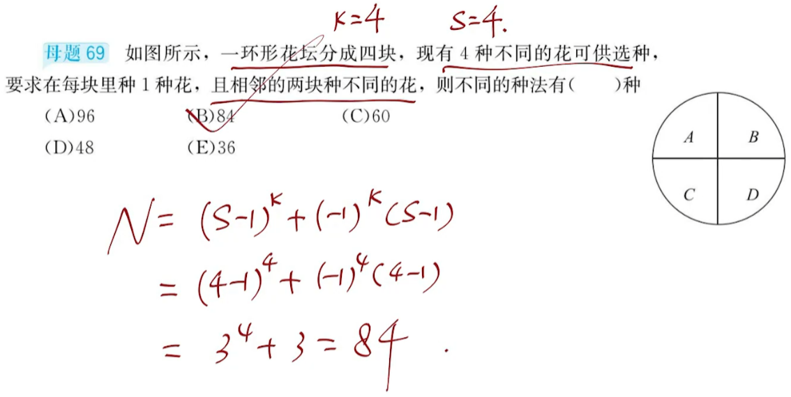 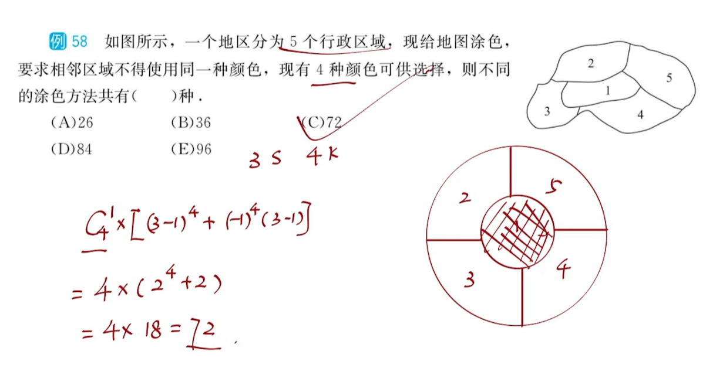母题模型22：二项式定理和展开式系数
二项式定理
二项式系数具有以下性质：
- 二项式系数和为$2^n$
- 由于二项式系数具有单峰对称性，故二项式系数的奇次项和偶次项的系数和相等，均为$2^{n-1}$
- 当n为偶数时，中间一项最大。